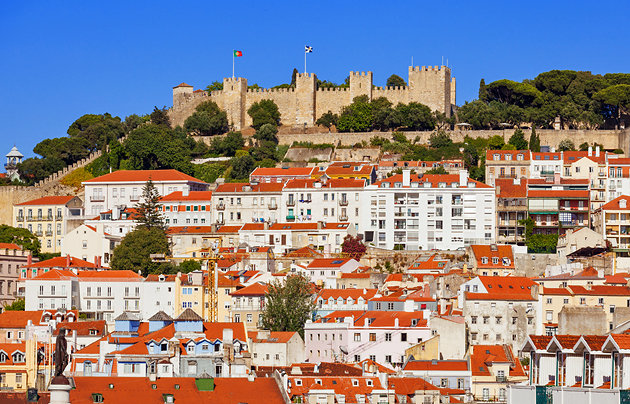
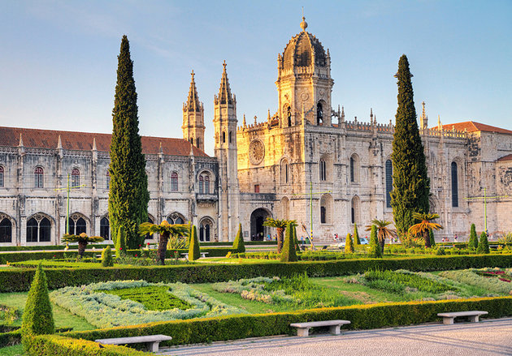
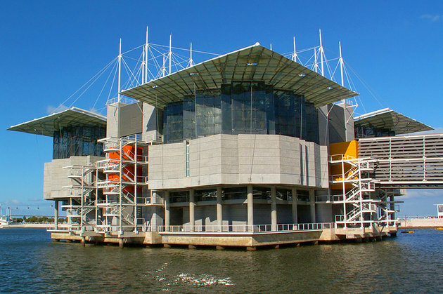
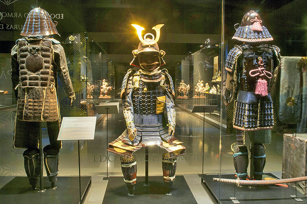
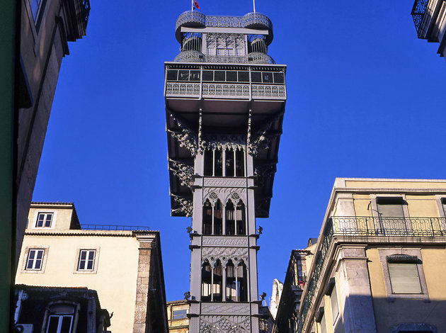
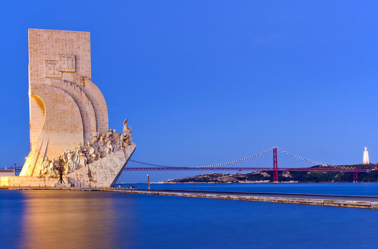
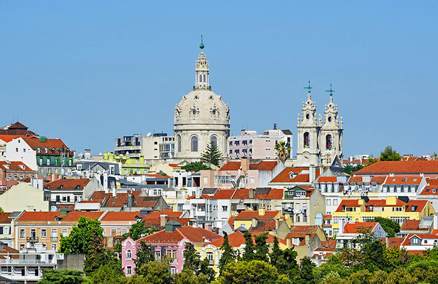
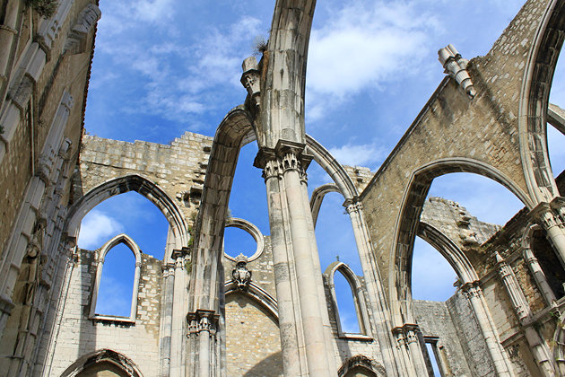

|  | 1. Castelo de São Jorge: An Iconic Landmark The most recognized of Lisbon's major attractions, St. George's Castle commands a glorious position near Alfama on the crown of a hill overlooking the Portuguese capital. This is one of Lisbon's most popular tourist destinations. Its impressive battlements, engaging museum, and fascinating archaeological site combine to make the castle a rewarding experience for the whole family, and kids especially will love clambering over the sturdy walls and towers that encircle the grounds.There's been a stronghold on this site since the Iron Age, but it was a castle that the Moors defended against invading Christian forces before finally being overrun in 1147 by Afonso Henriques. The victorious king built the Aláçova Palace, home to subsequent monarchs until a new royal residence was constructed near the river. (The palace foundations form part of the excavations seen today.) For the most part, visitors are happy enough to admire the fabulous views from the observation terrace that affords an uninterrupted panorama of the city, the River Tagus, and the distant Atlantic Ocean. For a different perspective, there's a Camera Obscura periscope housed in one of the towers that provides viewers with an unusual 360° projected view of the city below. |
| 2. Mosteiro dos Jerónimos: Built in Honor of Portugal's Age of Discovery A highlight of any Lisbon sightseeing tour, the 16th-century Jerónimos monastery is one of the great landmarks of Portugal, a stunning monument of immense historic and cultural significance deserving of its UNESCO World Heritage Site accolade. Near the riverfront in Lisbon's attractive Belém neighborhood, the monastery, also known as the Hieronymite convent, was commissioned by King Manuel I in 1501. Built to honor Vasco da Gama's epic 1498 voyage to India, Jerónimos is as much a symbol of the wealth of the Age of Discovery as it is a house of worship (construction was mostly funded by trade in the spices brought back by da Gama). Star features include the fantastically elaborate south portal and the beautiful and serene Manueline cloister. Vasco da Gama's tomb lies just inside the entrance to Santa Maria church. |  |
|  | 3. Oceanário de Lisboa: A Modern Aquarium The Lisbon Oceanarium is one of Europe's finest aquariums, and one of the largest in the world. It's also arguably the most family-orientated of all the city's visitor attractions. Designed by Peter Chermayeff and built for the Expo 98 World Exposition in an area now known as Parque das Nações, the oceanarium is home to a mind-boggling array of fish and marine animals, including dozens of different species of birds. The ingenious layout represents four separate sea- and landscapes, effectively the habitats of the Atlantic, Pacific, Indian, and Antarctic oceans. These surround an enormous central tank teeming with fish of all shapes and sizes including graceful rays, bulbous sunfish and sleek sharks - kids' favorite denizen of the deep. The wraparound plexiglass allows a fantastic close-up view of this magical undersea world, but you should also seek out less obvious, but no less extraordinary species housed in smaller aquaria such as the exquisitely delicate sea dragon and the comic clownfish. |
| 4. Museu do Oriente: Showcasing Portugal's Presence in Asia and the Far East West of the city center, near Alcântara, and housing a fabulous collection of oriental art built up by the influential Fundação Oriente, this engaging cultural facility chronicles Portugal's presence in Asia and the Far East. The permanent exhibition is set over two levels and grouped around several core areas of oriental art, particularly Chinese. Displayed under subdued lighting, but with individual pieces showcased under pinpoint spotlight, the collection takes you on an incredible journey that traces the cultural and trade links forged between Portugal and India, Japan, Myanmar, Macau, and Timor. Macau, a former Portuguese colony, is well represented by eye-catching pieces like the suspended boat-shaped cradle (c.1877) made from carved, lacquered, and golden oriental wood, cane, and iron. Elsewhere, an impressive display of Chinese Ming and Qing-dynasty terracotta figurines is placed near a set of forbidding 17th-century Samurai chainmail armor. |  |
|  | 5. Elevador de Santa Justa: An Antique Elevator With City Views Looming somewhat incongruously over the rooftops of Lisbon's Baixa (downtown) district is the odd-looking Santa Justa Lift, a neo-Gothic elevator and the most eccentric and novel means of public transport in the city. At first glance, its riveted wrought-iron frame and battleship-grey paint conjure images of the Eiffel Tower in Paris, and there is a connection: the French architect Raoul Mésnier du Ponsard, an apprentice of Gustave Eiffel, designed the elevator, which was inaugurated in 1901. It was built as a means of connecting the Baixa with the Largo do Carmo in the Bairro Alto neighborhood, a trendy area of the city peppered with expensive shops, Fado houses, and small restaurants. |
| 6.Padrão dos Descobrimentos: A Tribute to the Age of Discovery Dominating the Belém waterfront is the angular Monument to the Discoveries, an enormous monolith that leans over the River Tagus to resemble the prow of a caravel, the type of ship commanded by the Portuguese navigators in the 15th century to chart unexplored oceans and discover new lands.The design is deliberate. This landmark structure was built in 1960 to commemorate the 500th anniversary of the death of Henry the Navigator. It pays suitable tribute to all those actively involved in the development of the golden Age of Discovery by way of an amazing frieze of statues set along both sides of the monument of the most prominent personalities, figures like Vasco da Gama, Fernão de Magalhães, and Pedro Álves Cabral. Henry himself stands at the fore, caravel in hand. After admiring those immortalized in stone, you can jump in an elevator and be whisked to the top of the monument for a seagull-eye's view of the riverfront and the surrounding vicinity. Sunk into the esplanade below is a huge pavement compass, a giant mosaic map of the world that charts the locations and dates each new land was discovered. It's one of Lisbon's more unusual photo opportunities. |  |
|  | 7. Basílica da Estrela: The Beautiful Star Basilica The gleaming chalk-white dome of the Basílica da Estrela (Star Basilica) draws admiring glances from all across Lisbon such is its omnipresence on the city's skyline. The church is one of the capital's grandest and is sited on a hill west of the city center. Commissioned by Maria I, daughter of King José I, construction of the basilica began in 1779 and was completed in 1790. The limestone façade, embellished with a medley of statues and allegorical figures, is balanced by twin bell towers and is similar in design to the Mosteiro Pálacio Nacional de Mafra, though on a lesser scale.The interior is cool and serene (a real plus on a hot day), and architect Mateus Vicente de Oliveira and later Reinaldo Manuel's blueprints are translated into a vast, spacious interior of various shades of marble. |
| 7. Igreja do Carmo: One of the City's Oldest Churches The skeletal ruins of the Carmo church are among the most evocative of all Lisbon's historical monuments. Built to an almost exclusive Gothic design, this Carmelite treasure was constructed between 1389 and 1423. Resplendent with its adjacent convent, Carmo was once the city's most distinguished church. But on the Sunday morning of November 1, 1755, which happened to be All Saints' Day, a devastating earthquake struck the Portuguese capital. The violent tremors almost destroyed most of the building, and hundreds of worshippers perished under falling masonry. The chancel withstood the shockwaves, but the rest of the church was never rebuilt.Today, visitors can wander the open nave, overshadowed by the surviving arches that bow upwards into the sky. The chancel is now the delightfully quirky Museu Arqueológico do Carmo where exhibits include a Visigoth pillar and a Roman tomb. Among the more bizarre displays are two ancient mummies lying prone in their glass cases. The church façade overlooks the picturesque Largo do Carmo in Chiado, the centerpiece of which is the filigree Chafariz do Carmo fountain. Reached easily on foot, the square can also be accessed from the nearby Elevador de Santa Justa. |  |